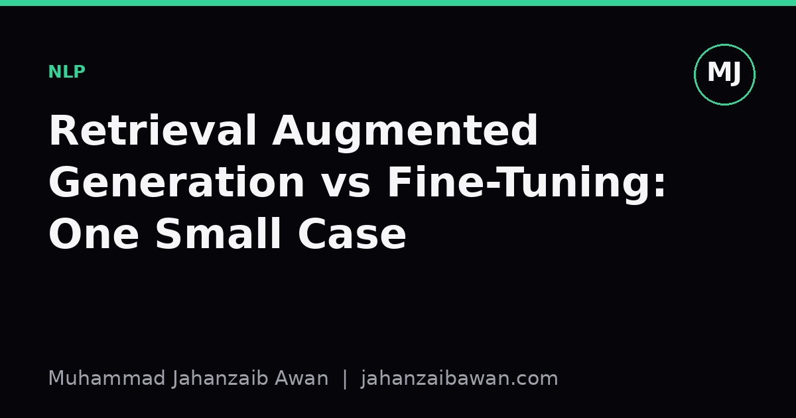

Retrieval Augmented Generation vs Fine-Tuning: One Small Case
A worked decision for a small knowledge base: when retrieval beats weight updates, and why the honest answer depends on how often your facts change.

The question people ask backwards
Whenever someone has a pile of documents and wants a language model to answer questions about them, the first question is usually 'should I fine-tune or use RAG'. I think this is the wrong order. The right first question is: how often does the underlying information change, and how many documents are we actually talking about. Everything else follows from that.
Here is a concrete scenario I like to use when thinking this through. Suppose you have an internal knowledge base of three hundred documents, perhaps policy pages, product specs and FAQs, totalling around four hundred thousand words. New documents are added roughly twice a month, and existing ones get edited more often than that, maybe weekly, as prices or terms shift. You want a model that can answer staff questions accurately and, ideally, tell you where an answer came from.
Fine-tuning here means taking a base model and further training it on examples derived from this knowledge base, so the facts get baked into the weights. RAG means leaving the base model alone and instead retrieving relevant passages at query time, then feeding them into the prompt alongside the question. Both can work. The decision is about cost, freshness and the kind of errors you can tolerate.
Working through the numbers
Four hundred thousand words is small by training standards, probably a few million tokens once you account for formatting. Fine-tuning a model on that volume is cheap in raw compute terms, but the problem is not the training run, it is the maintenance. If documents change weekly, you either retrain weekly, which is wasteful and risks subtle regressions each time, or you accept that the model is answering with stale facts for days or weeks at a stretch. For a knowledge base about, say, internal expense policy, a stale answer is not a minor inconvenience, it is actively wrong and someone might act on it.
RAG sidesteps this because the facts never live in the weights. You update the document store, and the very next query against that document reflects the change. There is no retraining step at all. For a knowledge base this size, building a retrieval index is almost trivial: embed each document chunk, perhaps three hundred to five hundred tokens per chunk, store the vectors, and do nearest-neighbour search at query time. With three hundred documents you might end up with two thousand chunks, which is nothing for any vector search setup, even a brute-force one.
The other number worth sitting with is evaluation cost. If you fine-tune, you need a held-out set of question-answer pairs that were not used to generate training examples, and you need to re-run that evaluation after every retraining cycle to check for regressions, including on topics you did not intend to touch. That evaluation burden recurs every time the documents change meaningfully. With RAG, the retrieval component and the generation component can largely be evaluated once and then monitored more cheaply, since the base model itself is not moving.
Where fine-tuning actually wins
I do not think RAG is simply better in general, and it would be dishonest to pretend otherwise. Fine-tuning wins when the thing you need to change is not facts but behaviour: tone, format, the way the model structures an answer, or domain-specific reasoning patterns that are hard to convey through retrieved context alone. If your three hundred documents are mostly used to teach the model a particular style of technical explanation, rather than to supply facts that need to stay current, fine-tuning on examples of that style can produce more consistent output than stuffing style instructions into every prompt.
Fine-tuning also wins when retrieval quality is the real bottleneck. If your documents are short, overlapping, or poorly structured, a retriever might pull back the wrong chunk even when the right answer exists somewhere in the collection. In that case, no amount of generation quality fixes a retrieval failure, and sometimes it is more productive to bake the small, stable core of facts directly into the model and treat retrieval as a secondary safety net rather than the primary mechanism.
There is also a latency and infrastructure argument. RAG means running an embedding model and a vector search at inference time, on top of the generation call. For a small knowledge base this overhead is modest, typically tens of milliseconds, but it is not zero, and it is one more system that can fail or drift. A fine-tuned model that already contains the facts needs nothing extra at inference time beyond the usual generation call, which matters if you are deploying somewhere with tight latency budgets or limited infrastructure.
The decision rule I actually use
For this particular scenario, three hundred documents with weekly edits, I would choose RAG, and I think most people in a similar position should default the same way. The update frequency is the deciding factor: anything that changes more often than your retraining cycle comfortably allows is a strong signal for retrieval. Fine-tuning becomes attractive once the underlying facts are genuinely stable for months at a time, or once the problem is clearly about behaviour and style rather than content.
In practice the two are not mutually exclusive. A reasonable middle path is to fine-tune lightly for the answer format and tone you want, then retrieve for the facts themselves, so the model is not learning content it cannot keep current, but is learning how to present retrieved material consistently. Whatever you choose, test it the same honest way: build an evaluation set that was not involved in choosing chunks or writing training examples, check performance separately on frequently changing topics versus stable ones, and be suspicious of any result that looks too clean before you have tried to break it.